构建最基本的回归模型
1.问题描述：
如何根据宝可梦的CP值预测进化后的CP值？
2.模型假设：
$$y = b + w * X_{cp}$$
为方便表示和计算，用$w_0$替代$b$，只需要在$X_{cp}$前面添加一维数值1，模型变为：
$$y = w * X_{cp}$$
3.损失函数：
$$L(f) = L(w) = \frac12 \sum_{i=1}^{10} \left(\hat {y}^i - w · x_{cp}^i\right) ^2$$
4.优化方法（梯度下降法）：
目标函数：
$$ f^\ast = arg \min_{f}^{} L(f) $$
代入模型方程：
$$ w^\ast= arg \min_{w} \frac12 \sum_{i=1}^{10}\left(\hat {y}^i - w · x_{cp}^i\right)^2$$
求梯度:
$$ \frac {\partial L} {\partial w} = \sum_{i=1}^{10} \left( \hat {y}^i - w · x_{cp}^i\right) (-x_{cp}^i)$$
参数更新:
$$w_{t+1} = w_t - \alpha · \frac {\partial L} {\partial w}$$
其中，$\alpha$为步长。
5.结果：
在测试集上的平均误差为35.
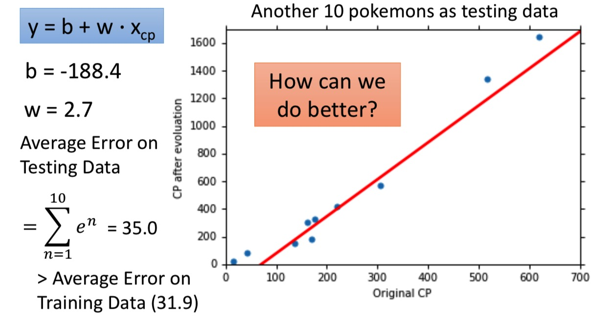
对回归模型进行优化
选择更加复杂的模型
增加一维特征$(X_{cp})^2$
$$y = b + w_1·X_{cp} + w_2 · (X_{cp})^2$$
在训练集上和测试集上的平均误差分别15.4和18.4
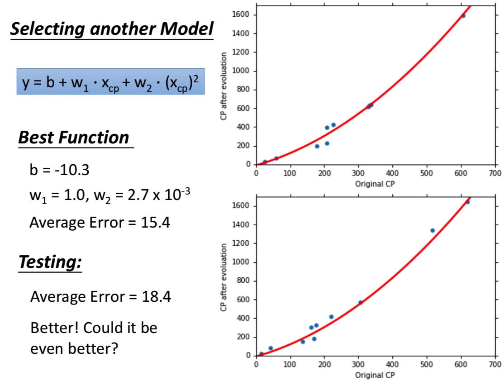再增加一维特征$(X_{cp})^3$
在训练集上和测试集上的平均误差分别15.3和18.1
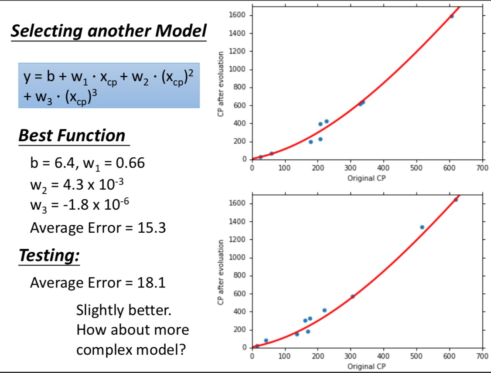再增加一维特征$(X_{cp})^4$
在训练集上和测试集上的平均误差分别14.9和28.8
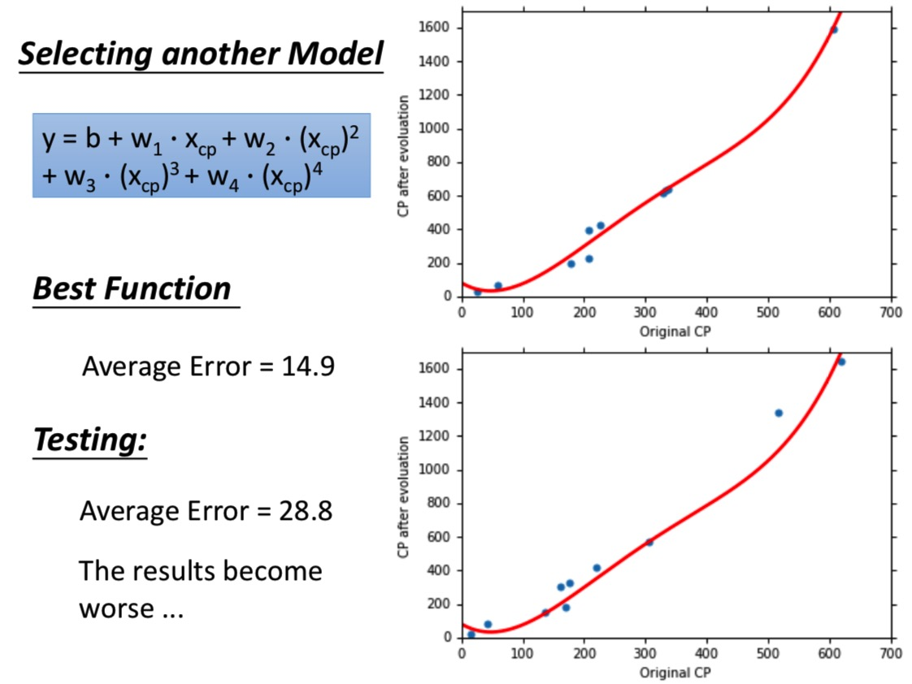再增加一维特征$(X_{cp})^5$
在训练集上和测试集上的平均误差分别12.8和232.1
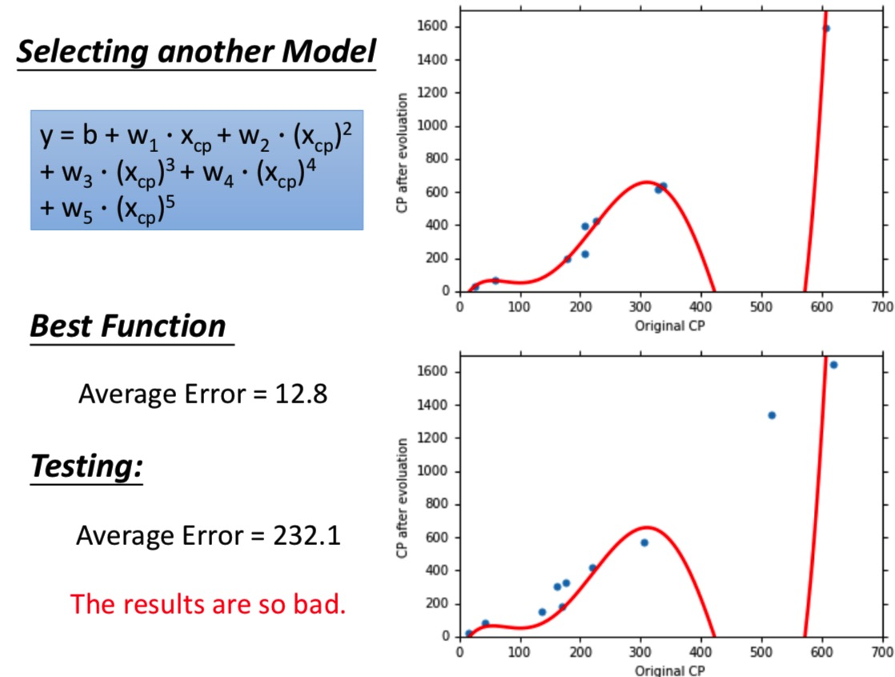
上述实验，可以看出：
- 更复杂的模型，可以得到更小的训练误差；
- 更复杂的模型，可能导致过拟合，在测试集上表现不好。
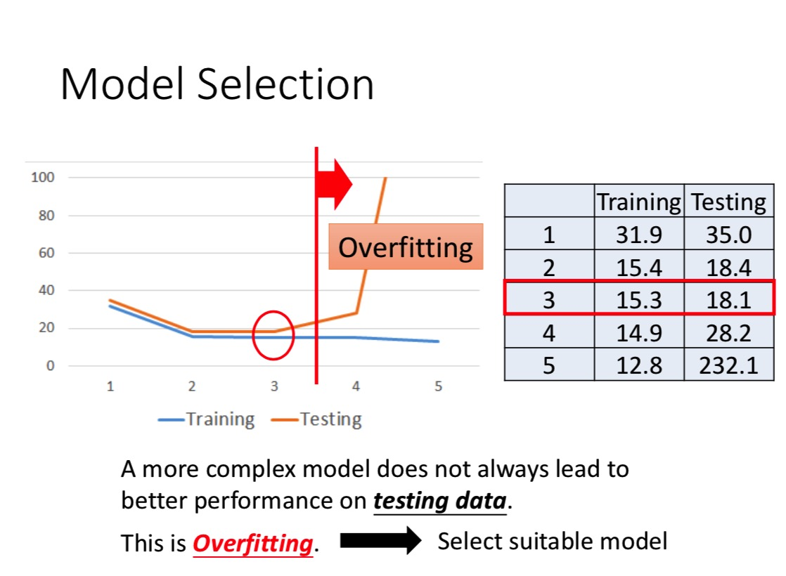
解决办法：收集更多的数据；
收集更多的特征后发现，下图中，同一个x，对应两个不同的y，所以推测存在隐藏的因子（宝可梦的种类）。
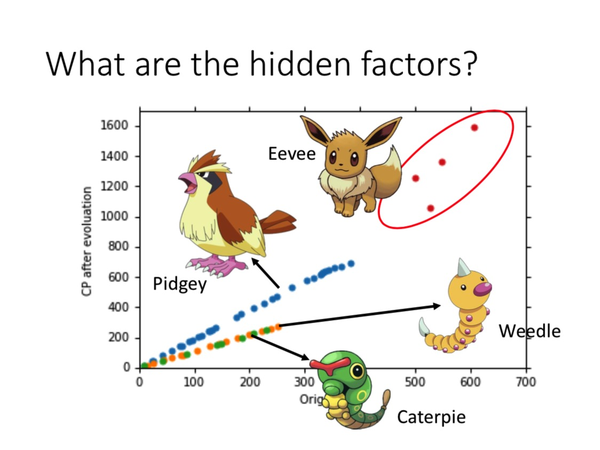
加上种类属性，重新建模：
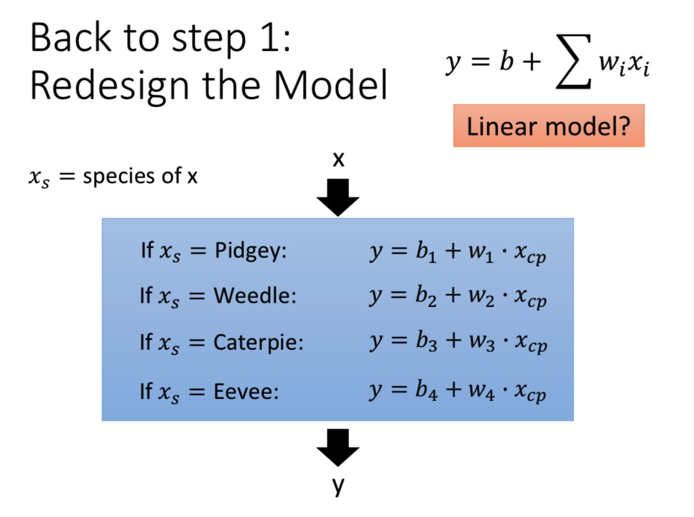
也就是说，每一类宝可梦分别对应一个回归模型.
在训练集和测试集上的误差分别为3.8和14.3
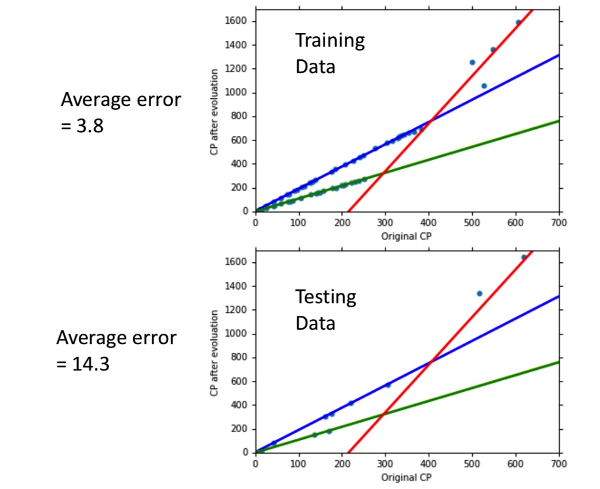
继续猜测，可能还有隐藏因子，例如『高度』、『体重』等。验证一下，过拟合了！
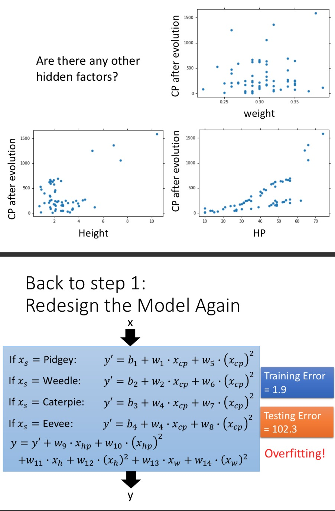
正则化（Regularization）：
以上猜测隐藏因子的方法不一定猜得到，正则化一般来说是有用的。
在损失函数后面添加一项对参数的约束：
$$L(f) = L(w) = \frac12 \sum_{i=1}^{10} \left(\hat {y}^i - w · x_{cp}^i\right) ^2 + \lambda \sum(w_i)^2$$
$w_i$很小，意味着函数比较平滑。
什么是平滑的函数？当输入变化很大时，输出的变化不大，则这个函数是平滑的。
如下图，当左右两边都加上$\delta x_i$时，如果$w_i$比较小，那么$y$的变化也会比较小。
需要给bias加regularization?
不需要，因为bias只影响函数上下移动，并不影响函数的平滑度。
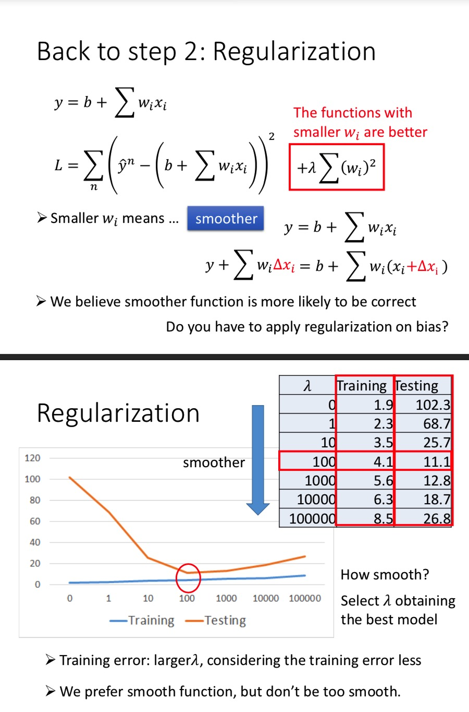
小结：
- 宝可梦进化后的CP值与进化前的CP值和宝可梦的类型有关，也可能存在其他的隐藏因子；
- 梯度下降方法；
- 我们最终在测试集上得到的误差为11.1，那么这个模型应用于新的数据集、更大的数据集上，误差会变大还是变小？
- 下一节：误差来自哪里？